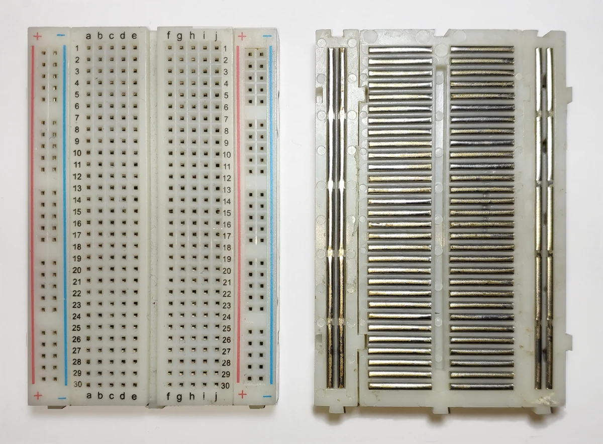

Breadboard & Multimeter — Hai Công Cụ Không Thể Thiếu
Hiểu sâu cấu tạo breadboard và nắm vững kỹ thuật đo continuity để tránh lỗi kết nối trong mọi thực hành.
- Hiểu cấu tạo bên trong breadboard: lỗ nào được nối với nhau
- Phân biệt rail nguồn (power rail) và vùng linh kiện (terminal strip)
- Hiểu tại sao rãnh giữa chia đôi breadboard và không nối nhau
- Dùng multimeter đo continuity (thông mạch) để kiểm tra kết nối
- Đo điện trở (Ω) bằng multimeter chính xác
- Phát hiện các kết nối sai trên breadboard bằng continuity test
- Hiểu điện trở tiếp xúc và ảnh hưởng đến mạch
- Kỹ thuật cắm linh kiện đúng cách trên breadboard
Dụng cụ và linh kiện bài này
| Tên | Thông số | Số lượng |
|---|---|---|
| Breadboard | 830 lỗ — loại tiêu chuẩn phổ biến nhất | 1 |
| Multimeter | Có chức năng Continuity (âm thanh buzzer) | 1 |
| Dây jumper Male-to-Male | Đủ màu: đỏ, đen, vàng, xanh | 10–20 sợi |
| Điện trở 1kΩ | ¼W, sai số 5% (màu nâu-đen-đỏ-vàng) | 5 |
| LED 5mm (bất kỳ màu) | Để kiểm tra kết nối | 2 |
| Pin AA + hộp pin đôi | Nguồn 3V hoặc adapter 5V | 1 bộ |
1. Breadboard — Bàn thực nghiệm không cần hàn
Breadboard (hay solderless breadboard — bảng cắm không cần hàn) là công cụ cho phép bạn xây dựng và thử nghiệm mạch điện tử mà không cần hàn thiếc. Bạn chỉ việc cắm linh kiện và dây nối vào các lỗ — và bên trong breadboard đã có các thanh kim loại nối sẵn một số lỗ với nhau.
Điều quan trọng nhất cần hiểu: không phải tất cả các lỗ đều nối với nhau. Bạn cần biết chính xác lỗ nào được nối với lỗ nào để lắp mạch đúng. Đây là nguồn gốc của hầu hết lỗi kết nối ở người mới học.
1.1 Cấu tạo bên trong breadboard 830 lỗ
Breadboard 830 lỗ (loại phổ biến nhất, kích thước ~16,5 cm × 5,5 cm) có hai vùng chức năng khác nhau:

1.2 Quy tắc vàng — 3 điều bắt buộc phải nhớ
1. Các lỗ trong cùng một cột số, cùng nửa (a–e hoặc f–j) được nối với nhau. Cắm hai chân linh kiện vào cùng một cột nghĩa là nối chúng lại.
2. Lỗ bên trên rãnh giữa (hàng e) và lỗ bên dưới (hàng f) của cùng cột số KHÔNG được nối với nhau. Rãnh giữa cách ly hai nửa. Đây là thiết kế để cắm IC DIP (dual in-line package) qua rãnh.
3. Rail nguồn (+) và (–) chạy theo chiều dài board nhưng có thể bị ngắt ở giữa hoặc chia đoạn khác nhau tùy mẫu. Dùng continuity test để xác nhận từng đoạn rồi nối jumper nếu cần.
1.3 Lỗi phổ biến nhất khi dùng breadboard
Người mới thường cắm IC qua rãnh giữa (đúng) nhưng sau đó lại nối dây đến hàng e thay vì hàng d (hoặc ngược lại). Kết quả là dây nối vào nửa không có chân IC — mạch sẽ không hoạt động dù nhìn bề ngoài có vẻ đúng. Luôn kiểm tra: dây nối có cùng nửa (a–e hoặc f–j) với chân linh kiện muốn nối không?
Sau khi xem video, hãy cầm breadboard của bạn và xác định: (1) đâu là rail nguồn trên, (2) đâu là rail nguồn dưới, (3) đâu là rãnh giữa, (4) thử cắm hai đầu dây jumper vào cùng cột — chúng có nối không?
2. Đo continuity (thông mạch) — kỹ năng debug số 1
Continuity test (kiểm tra thông mạch) là chức năng trên multimeter phát ra âm thanh (beep) khi hai điểm được đặt que đo có điện trở thấp — nghĩa là được nối với nhau. Đây là chức năng bạn sẽ dùng nhiều nhất khi debug mạch trên breadboard.
2.1 Cách thực hiện continuity test
-
Chọn chế độ Continuity: Xoay selector về ký hiệu
))))hoặc diode symbol có kèm loa. Nghe thấy tiếng beep ngắn khi chuyển sang chế độ này là bình thường trên một số máy. -
Kiểm tra que đo: Chạm hai đầu que đỏ và đen vào nhau — máy phải beep liên tục. Nếu không beep, kiểm tra chế độ hoặc pin máy.
-
Test breadboard — trong cùng nhóm 5 lỗ: Ngắt hoàn toàn nguồn khỏi breadboard. Cắm một đầu dây jumper vào lỗ a1; đặt que đỏ vào d1 và que đen vào đầu kia của dây jumper. Máy sẽ báo thông mạch nếu a1 và d1 được nối với nhau.
-
Test rãnh giữa — giữa e và f: Đặt que đỏ vào e1, que đen vào f1. Máy KHÔNG được beep — hai bên rãnh không nối nhau.
-
Test rail nguồn: Đặt que đỏ vào lỗ (+) đầu breadboard, que đen vào lỗ (+) cuối breadboard. Beep = rail nối thông suốt. Nếu không beep, rail bị ngắt giữa chừng — cần dây jumper nối lại.
Continuity test chỉ dùng khi mạch không có nguồn cấp. Nếu đang có điện, kết quả sẽ sai và có thể gây hỏng máy đo. Luôn tắt nguồn, tháo pin hoặc rút adapter trước khi test continuity.
2.2 Ngưỡng điện trở của continuity test
Hầu hết multimeter coi mạch là "thông" khi điện trở ≤ 50 Ω đến 200 Ω (tùy model). Điều này có nghĩa là:
- Dây jumper tốt: ≈ 0,1–1 Ω → luôn beep
- Thanh kim loại trong breadboard mới: ≈ 1–5 Ω → luôn beep
- Breadboard cũ, bẩn: có thể 10–50 Ω → vẫn beep, nhưng điện trở tiếp xúc này ảnh hưởng đến mạch analog nhạy cảm
- Điện trở 1kΩ: 1000 Ω → không beep (mạch hở theo góc nhìn continuity)
3. Đo điện trở bằng multimeter
Ngoài continuity test, multimeter còn có thể đo giá trị điện trở chính xác. Chức năng này dùng symbol Ω trên selector.
3.1 Cách đo điện trở
-
Tắt nguồn mạch hoàn toàn (nếu linh kiện đang trong mạch). Điện trở đo trong mạch đang có điện sẽ cho kết quả sai.
-
Chọn thang đo Ω: Với điện trở 1kΩ, chọn thang
2kΩ(hoặc2000Ω). Nguyên tắc: thang lớn hơn giá trị cần đo nhưng gần nhất. -
Đặt que đo: Một que vào mỗi chân điện trở. Điện trở không có phân cực — không cần phân biệt đỏ/đen.
-
Đọc kết quả: Nên thấy giá trị gần 1,00 kΩ (tức là 1000 Ω). Sai số ±5% là bình thường với điện trở carbon film thông thường, nghĩa là kết quả từ 950 Ω đến 1050 Ω đều hợp lệ.
Khi hai ngón tay cầm hai đầu điện trở trong khi đo, điện trở cơ thể người (~10 kΩ–100 kΩ) mắc song song với điện trở cần đo. Kết quả sẽ thấp hơn thực tế. Với điện trở 1 MΩ trở lên, sai số này rất đáng kể. Hãy cầm một đầu bằng tay, đặt đầu kia lên mặt phẳng và đặt que đo vào.
3.2 Bảng kết quả đo điện trở
| Điện trở đo | Giá trị danh định | Giá trị đo được | Sai số | Đánh giá |
|---|---|---|---|---|
| R1 (1kΩ) | 1000 Ω ±5% | _____ Ω | _____% | _____ (Pass/Fail) |
| R2 (1kΩ) | 1000 Ω ±5% | _____ Ω | _____% | _____ (Pass/Fail) |
| R3 (1kΩ) | 1000 Ω ±5% | _____ Ω | _____% | _____ (Pass/Fail) |
| Dây jumper | ~0 Ω | _____ Ω | N/A | Điện trở tiếp xúc |
| Breadboard (cùng nhóm) | ~0 Ω | _____ Ω | N/A | Điện trở tiếp xúc |
4. Kỹ thuật sử dụng breadboard hiệu quả
4.1 Nguyên tắc màu dây
Mặc dù không có quy định bắt buộc, nhưng việc dùng màu dây nhất quán giúp debug rất nhiều:
| Màu dây | Công dụng quy ước | Lý do |
|---|---|---|
| Đỏ | VCC, nguồn dương (+) | Quy ước điện toàn cầu: đỏ = dương |
| Đen | GND, nguồn âm (–) | Quy ước điện toàn cầu: đen = âm/GND |
| Xanh dương | Tín hiệu số (digital) | Phân biệt với tín hiệu analog |
| Vàng | Tín hiệu analog | Dễ nhận ra trên breadboard |
| Xanh lá | Output/Load | Chỉ đường đến linh kiện tải |
| Tím | I²C/SPI/UART | Giao tiếp serial |
4.2 Các lỗi cắm breadboard thường gặp
| Lỗi | Mô tả | Cách phát hiện | Cách tránh |
|---|---|---|---|
| Cắm nhầm hàng | Dây cắm vào hàng e thay vì d, nhìn bề ngoài rất khó phân biệt | Continuity test giữa dây và chân linh kiện | Đếm hàng chữ cái trước khi cắm; dùng continuity confirm |
| Dây ngắn hơn khoảng cách | Dây bị kéo căng, có thể bật ra khi di chuyển | Nhìn bằng mắt, nhẹ nhàng giật dây | Dùng dây đủ dài, hoặc route qua đường vòng |
| Cắm không đủ sâu | Dây không tiếp xúc tốt với thanh kim loại bên trong | Điện trở tiếp xúc cao khi đo; kết nối không ổn định | Ấn dây xuống đủ lực cho đến khi chân ngập vào lỗ |
| Hai dây cùng nhóm vô tình | Hai dây cắm vào cùng nhóm 5 lỗ → nối ngắn mạch tín hiệu | Mạch hoạt động sai, đo điện áp bất thường | Kiểm tra kỹ trước khi cấp điện; continuity test toàn bộ |
| Rail nguồn bị đứt giữa | Một số breadboard rail bị chia đôi ở giữa — không nối thông | Continuity test từ đầu đến cuối rail | Dùng jumper nối hai nửa rail lại với nhau |
5. Thực hành: Xây dựng và kiểm tra mạch LED đầu tiên
Mục tiêu: Lắp mạch LED đơn giản trên breadboard, kiểm tra từng kết nối bằng continuity trước khi cấp điện.
-
Chuẩn bị (chưa cấp điện): Đặt breadboard trên bàn. Cắm điện trở 1kΩ vào cột 10: một chân vào a10, chân còn lại vào a15 (bắc qua 5 lỗ — điện trở nằm ngang).
-
Cắm LED đỏ: Anode (chân dài) vào b15; cathode (chân ngắn) vào b18. Hai chân thuộc hai cột số khác nhau nên không bị nối tắt. Nguồn 3 V có thể không đủ để LED xanh dương sáng.
-
Nối dây GND: Dây đen từ b18 → Rail (–) phía trên breadboard. Tiếp tục từ rail (–) → cực âm pin/adapter.
-
Continuity test khi đã ngắt nguồn: (1) a15 ↔ b15 phải beep (cùng nhóm 5 lỗ); (2) b18 ↔ đoạn rail (–) có dây nối phải beep; (3) kiểm tra rail (+) và rail (–) không bị chập. Không dùng tiếng beep để kiểm tra qua điện trở 1 kΩ hoặc LED vì ngưỡng báo của đồng hồ khác nhau.
-
Cấp nguồn: Nối một jumper từ đoạn rail (+) đến a10. Khi đã kiểm tra xong và bỏ que ở chế độ continuity, nối cực dương nguồn 3 V vào rail (+), cực âm vào rail (–); LED đỏ phải sáng.
-
Đo điện áp: Dùng multimeter đo điện áp tại: (1) hai đầu điện trở, (2) hai đầu LED. Ghi kết quả vào bảng.
Nếu bạn đo V_R + V_LED ≠ V_nguồn, có thể do: (1) điện trở tiếp xúc breadboard, (2) pin đang bị sụt áp, (3) que đo bị đặt sai điểm. Điều này dẫn vào Bài 6 — KVL — nơi chúng ta chứng minh chính thức rằng tổng điện áp trong một vòng kín luôn bằng 0.
6. Debug — Bảng lỗi thực hành Bài 2
| Hiện tượng | Nguyên nhân có thể | Kiểm tra bằng continuity | Xử lý |
|---|---|---|---|
| LED không sáng dù đã cấp nguồn | Mạch hở, LED ngược chiều, hoặc kết nối breadboard sai | Test từng đoạn: nguồn → R → LED → GND | Xác định đoạn hở, sửa kết nối. Kiểm tra chiều LED (chân dài = dương) |
| Continuity test không beep dù nhìn có vẻ nối | Dây cắm không đủ sâu, hoặc cắm nhầm hàng | Nhìn kỹ số hàng; thử nhổ ra cắm lại | Cắm lại chắc hơn, đếm lại hàng chữ cái |
| LED sáng nhưng rất yếu | Pin yếu, điện trở quá lớn, hoặc nguồn 3V không đủ cho LED xanh | Đo điện áp tại hai đầu LED và hai đầu R | Thay pin mới; thử LED đỏ (V_f thấp hơn); thử nguồn 5V |
| LED sáng quá chói, bóng đèn nóng | Điện trở hạn dòng bị nhầm giá trị (quá nhỏ) hoặc bỏ quên | Đo điện trở R khi mạch chưa có điện | Kiểm tra mã màu điện trở; thêm điện trở lớn hơn |
a) Có — cùng số cột
b) Không — khác hàng chữ
c) Có — nếu cùng nửa (a–e)
d) Không — phải cùng hàng chữ mới nối
a) Sẽ hỏng điện trở trong mạch
b) Kết quả sẽ sai và có thể hỏng máy đo
c) Máy chỉ đo được điện trở trong môi trường tối
d) Không ảnh hưởng gì
a) Chính xác hơn vì tiếp xúc tốt
b) Thấp hơn giá trị thực do điện trở cơ thể người mắc song song
c) Cao hơn giá trị thực
d) Không thay đổi
a) Dọc theo cột số
b) Ngang theo hàng chữ
c) Ngang toàn bộ breadboard
d) Theo đường chéo
a) Cắm tất cả 8 chân vào cùng một nhóm
b) Cắm qua rãnh giữa sao cho 4 chân bên trái ở vùng a–e và 4 chân bên phải ở f–j
c) Cắm dọc theo một cột
d) Cắm vào rail nguồn
Không nhìn sơ đồ breadboard, dùng chỉ multimeter (chế độ continuity) để xác định:
- Breadboard của bạn có bao nhiêu nhóm lỗ trong vùng terminal strip?
- Rail nguồn có bị ngắt ở giữa không? (Test từ lỗ đầu đến lỗ cuối)
- Xác nhận a1, b1, c1, d1, e1 đều nối với nhau
- Xác nhận e1 và f1 KHÔNG nối nhau
A1: c) — a5 và c5 cùng số cột 5, cùng nửa a–e → nối với nhau. Đáp án a) thiếu điều kiện "cùng nửa".
A2: b) — Nguồn điện trong mạch có thể cộng vào điện áp multimeter cấp khi đo, gây sai số hoặc hỏng mạch đo bên trong.
A3: b) — Điện trở cơ thể (~10kΩ) mắc song song với R (1kΩ) → R_tổng = 10000×1000/(10000+1000) ≈ 909 Ω, thấp hơn 1000 Ω.
A4: c) — Rail chạy theo chiều dài breadboard; nhiều mẫu có điểm ngắt, không được mặc định toàn rail thông suốt.
A5: b) — Đây là mục đích chính của rãnh giữa: để cắm IC DIP sao cho hai dãy chân nằm ở hai vùng riêng biệt.